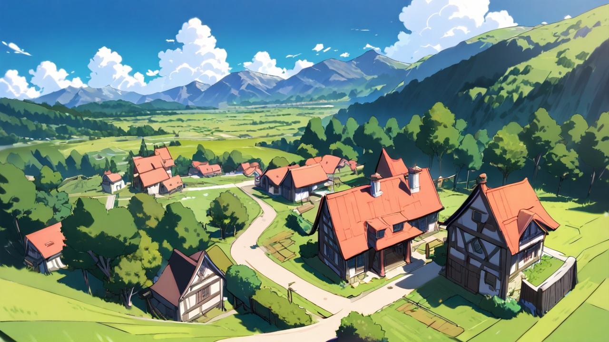
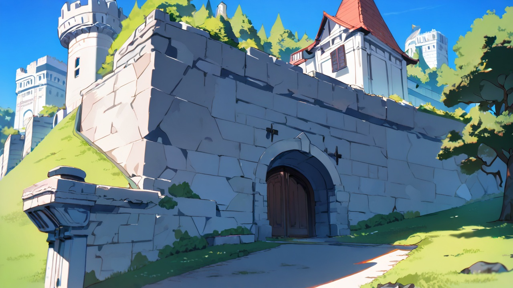
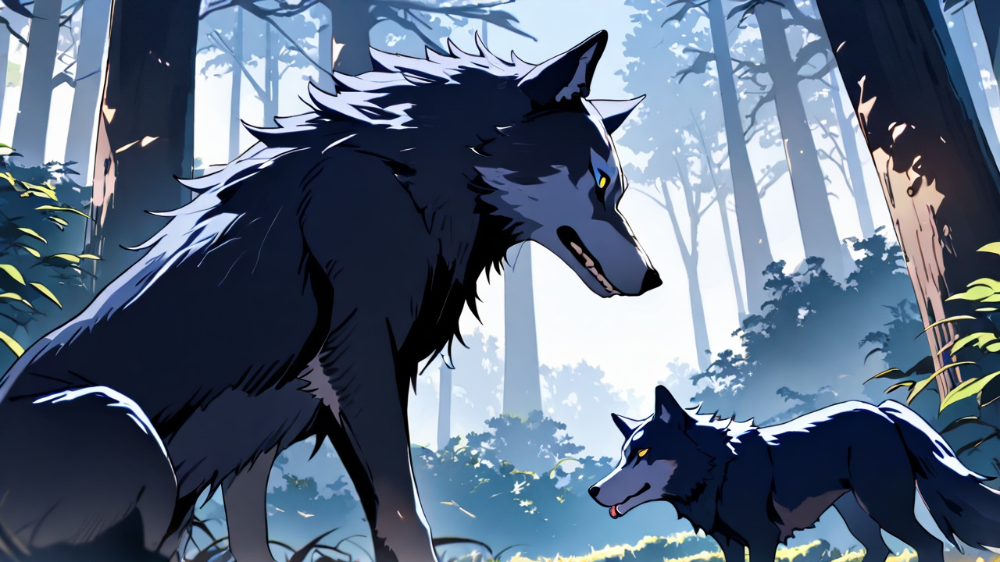
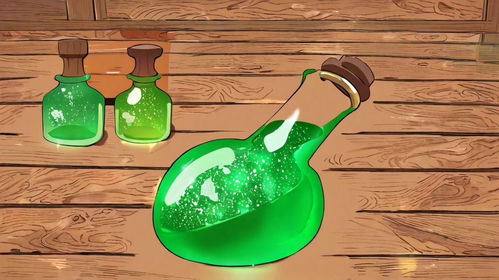
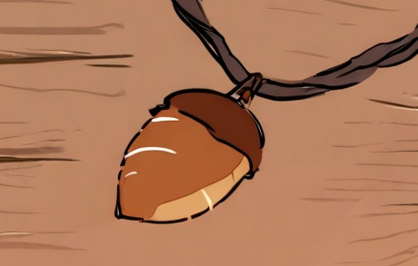

20xx年7月
通称WVROは、剣と魔法の中世ヨーロッパ風ファンタジー世界を舞台にしたフルダイブVRMMORPG。
ゲーム内時間は現実の6倍速で進行し、一般プレイヤーには1日8時間のログイン制限があるが、医療実験の被験者は24時間連続ダイブが可能になっている。プレイヤーはリアルの性別とリアルの容姿をベースにしたアバターを作成し、冒険・戦闘・生産（薬草採取、ポーション調合、料理、木工、鍛冶など）を自由に楽しめる。
世界は太陽神ウクレレと月女神アクレレによって統治され、村・町・森・平原・ダンジョンが広がる穏やかなファンタジー世界。スキル制で成長し、PKは不可、痛覚は50%に抑えられ、安全地帯でのログアウトも配慮されている。オープンベータから月額制の本サービスへ移行する、没入感を重視したVR世界となっている。

ミケたちが最初に降り立つ村。初期地点は東西南北と4か所から選べ、内容はほぼ同一になっていて、負荷分散を意図している。
宿屋、雑貨屋、村長宅、元鍛冶屋など必要最低限の機能しかないので、本格的な冒険をするには先を目指す必要がある。
初期フィールドの中央にある町。城塞都市で、中規模な町。
最初の目標として、このデルタ町を目指すことになる。冒険者ギルド、鍛冶屋、教会など、一通りの設備がそろっている。
デルタ町の地下にあるダンジョン。
第一章の最終ボスが待ち構える、比較的難易度の高いコンテンツ。
地理としては、世界「レポリダイ」。カーディス大陸。
アデレイス王国、首都はファインティア。
第一章のデルタ町周辺の村を含めてサークル地方と呼ぶ。
サークル地方は、大きなカルデラの内側にあり、四方を山が囲んでいる閉鎖された地。

ダンジョンボス、フィールドボスなどがいる。
主にパーティー向けコンテンツであり、多くの経験値とアイテムそして名声が取得できる。
森フィールドボス。北東と南西の森にそれぞれ生息している。
群れで行動し、ソロで討伐するのは難易度が非常に高い。
錬金術により、ポーションの作成が可能となっている。
錬金術は材料を投入し料理のような調合作業を経て、ポーションになる。
5級ポーションがメインで登場するが、調薬作業のランクにより効能が異なる。

「ひとり」を意味するゲーム用語。多くのソロプレイヤーがいる一方、一時的な回復などがしにくいため、難易度の高いプレイスタイルだとされる。
主人公であるミケたちは、基本ソロでは活動せずパーティープレイ中心で行動する。
2人から6人程度までをいちグループとしたシステム要素。
経験値やアイテムの自動分配機能がある。
パーティーには名前を付けられ、若干のボーナス加点がつく。
2パーティーから6パーティー程度までをいちグループとした集まりのこと。
強いボス戦などで共同して行動することをこう呼ぶ。

エヌピーシー。Non Player Character。ゲーム内の住民のことを主にさす。
WVROではAI駆動型NPCとなっており、プレイヤーと見分けがほとんどつかない。
非礼なことをすればプレイヤーもNCPに適当に扱われるし、愛情をこめて接すればそれなりに応えてくれる。
プレイヤーのことを、NPCたちは「神の使い」と認識しており、世界の外から来たことを知覚している。
NPCは基本、外の世界の知識を持たないが、それでも自分たちの世界以外があることを理解している。
主人公のミケたちは医療実験のため、定期的に丸木先生の診察を受ける。
ミケたちはログアウト不可なので、丸木先生がゲームにログインしてゲーム内で診察を行う。